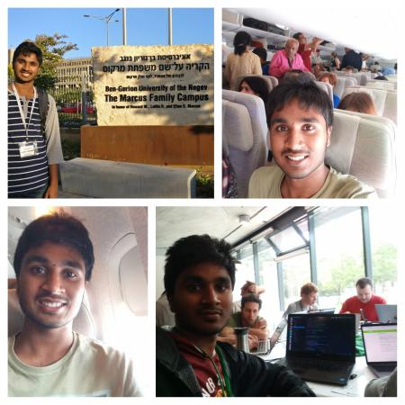

My childhood dream of flying
As people usually do, I too had a lot of dreams when I was in school; flying in an airplane, traveling to a foreign country, making a name for myself, to name a few. I am delighted to say that I have brought many of my dreams to fruition during my under graduation in Amrita Vishwa Vidyapeetham and still continue to do so!
I didn’t have a computer science background before college, so I spent my first year exploring various fields in CS and learning the basics of programming. I joined the student-run open-source club in our university FOSS@Amrita. In 2017, my seniors asked us to contribute to open-source projects and participate in the Google Summer of Code program. I was clueless about GSoC and open-source, so I started with learning about VCS and then moved on to contribute to Wikimedia technical projects.
It took me nearly 3 months to understand Gerrit, the workflow, the software codebase, and to get my first patch merged. After fixing a few bugs, I made a project proposal and applied for GSoC’18, but I wasn’t selected. With my mentor’s and seniors’ guidance, I kept on contributing to multiple technical projects in Wikimedia, participated in various technical programs, discussions, meetings, and many more.
After 16+ months of continuous efforts, in 2019 my scholarship (all-expenses-paid) for Wikimedia Hackathon 2019 got approved, it was held in Prague, Czech Republic. Further, my project proposal “VideoCutTool - A tool to edit videos in commons” was accepted for Google Summer of Code 2019 with Wikimedia. I was ecstatic but there was a small hitch. My university end semester examinations were around the same time as the hackathon. I was worried that I might miss my dream come true opportunity. Some of my friends, family, and teachers suggested not to miss end-sem exams. But I made up my mind and finally decided to attend the hackathon in Europe! A few weeks later, I was awarded a scholarship to study Data Mining and Bussiness Intelligence for the applications of Cyber Security in Israel. Again my academic exams proved to be an obstacle, nevertheless, I went to Israel for completing my course, My GSoC schedule and BGU schedule were also intertwined, so I spent ~8hrs in the morning for the course classes in Israel and ~8hrs in the night to work on my GSoC project, After coming from Israel I completed my ongoing semester exams, missed Internal exams, followed by missed end-sem examinations all in the span of a month, I secured decent grades in all these exams too, So 2019 was a special year for me, I stepped into 9 International flights and that was the start of my International Travel too!

Always believe in yourself and work with a passion for what you want, opportunities will surely come your way!
Subscribe to Gopa's-Blog
Get the latest posts delivered right to your inbox